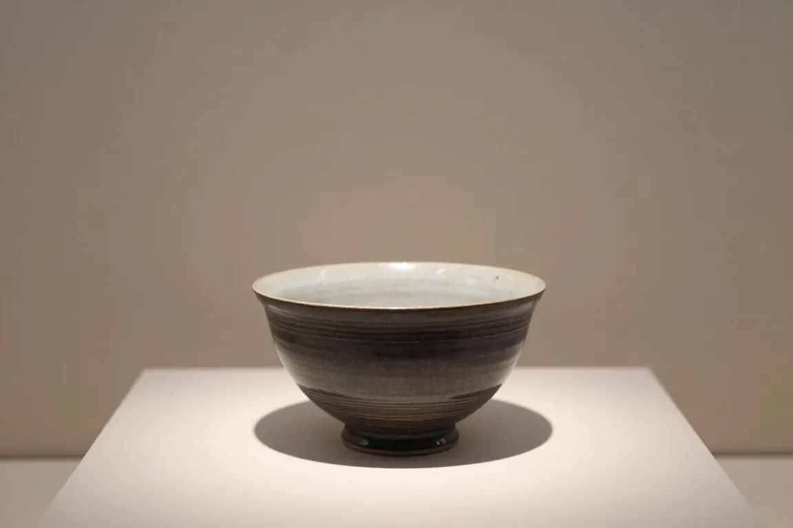

Тонкая студийная керамика Лондона после 1946 года. Люси Ри и Ханс Купер работали в маленькой мастерской и делали тонкие чаши, бутылки и скульптурные формы с тихой фактурной поверхностью.

Главная идея
Современный горшок — это точная форма с тихой поверхностью, где глазурь и глина делают работу, которую раньше делал орнамент.
Принципы дизайна
Вытачивайте форму тонкой и точной: стенка фарфора 2–3 мм, стенка каменной массы 3–6 мм.
Держите профиль простым: цилиндр, конус, шар или их сочетание.
Соединяйте две-три выточенные части видимым швом, чтобы форма не была одним броском.
Покрывайте каменную массу тонким марганцем или белым ангобом и оставляйте матовой, без глазури.
Делайте глазурь пористой, вулканической или толстой, одного цвета: розового, жёлтого, белого или бронзового.
Процарапывайте линию через ангоб или глазурь острым инструментом, узором из линий 1–2 мм.
Обжигайте в электрической печи, в окислении, при 1200–1280 °C.